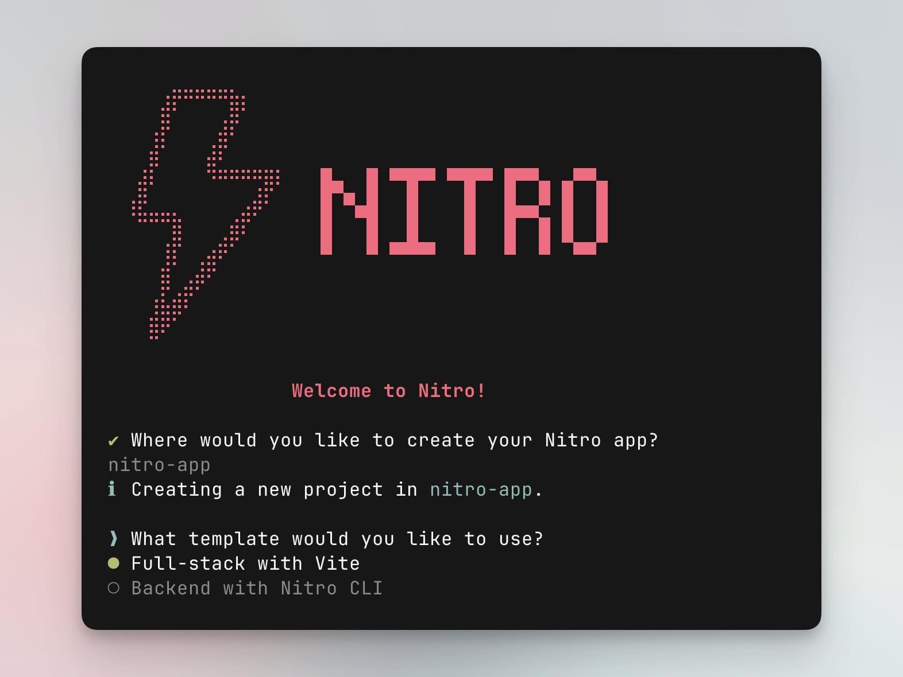
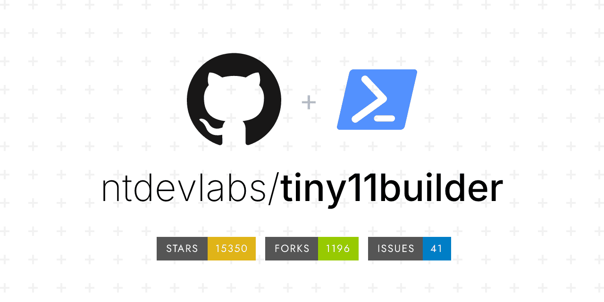
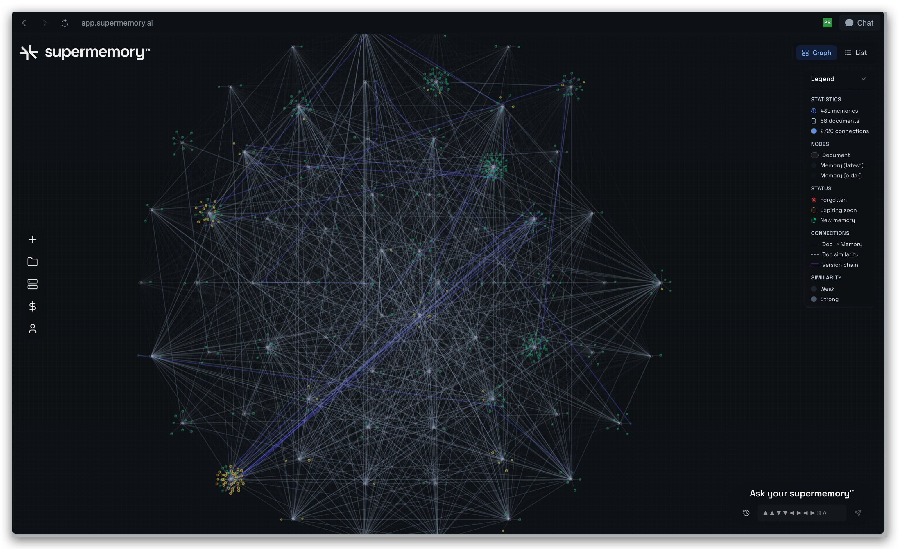
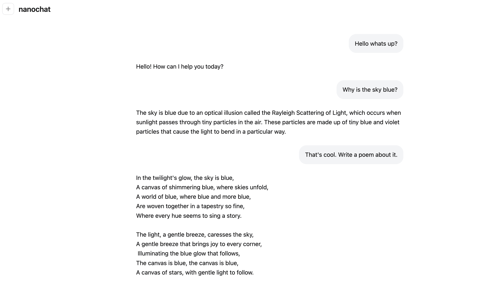
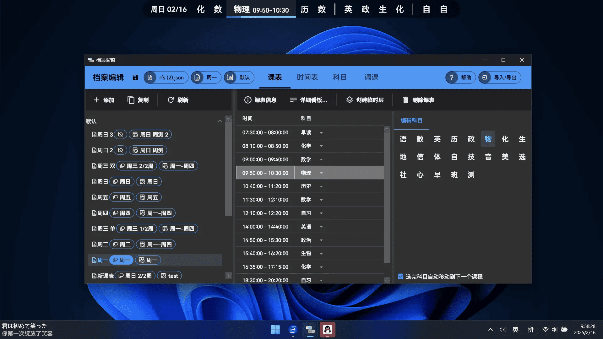
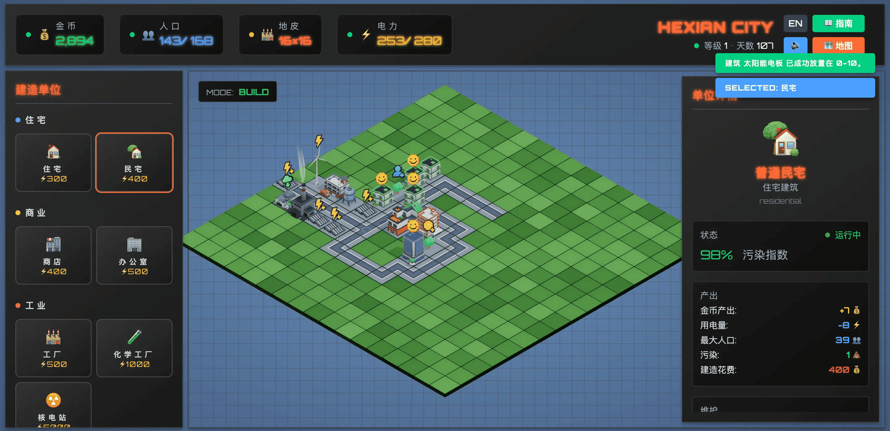

上周，腾讯、阿里、蚂蚁到谷歌、Anthropic，各大厂都跟约好了一样，在 AI 各个领域疯狂“亮剑”。咱们吃瓜群众围观“神仙打架”的同时，开源社区也没闲着。抛开那些高大上的大模型不谈，GitHub 上的“野生”开源大神们也带来了不少宝藏开源项目！
首先登场的是 nanochat，它用极简的代码复刻了 ChatGPT 全流程，一周斩获 27k Star！🤯 你敢信？然后是 Windows 用户的福音。是不是受够了 Win11 的臃肿和“全家桶”？tiny11builder 脚本一跑，瞬间还你一个清爽干净的系统。前端同学也别急，Nitro 来了。主打一个“一次编写，哪里都能跑”，多云平台部署再也不是难题了。最后，AI 的“金鱼记忆”也有救了——supermemory 让 AI 拥有长期记忆。
哦对了，HelloGitHub 的评论区也挺热闹的。ClassIsland 让课表在教室大屏上“抬头即见”，CubeCity 则是一个让你在浏览器里过把“市长瘾”的模拟游戏。上班摸鱼（不是）...我是说，放松休闲时，可以去建个城玩玩。
· 本文目录
· 1\. 热门开源项目
· 1.1 全栈 JS/TS 应用多平台部署工具：Nitro
· 1.2 基于 Node.js 的无头电商平台：EverShop
· 1.3 构建精简版 Windows 11 镜像的脚本：tiny11builder
· 1.4 让 AI 拥有长期记忆的基础设施：supermemory
· 1.5 自己动手打造 ChatGPT 聊天机器人：nanochat
· 2\. HelloGitHub 热评
· 2.1 抬头即见的开源课表工具：ClassIsland
· 2.2 卡通风格城市建设模拟游戏：CubeCity
· 3\. 结尾
1. 热门开源项目
1.1 全栈 JS/TS 应用多平台部署工具：Nitro

主语言：TypeScript，Star：9.1k，周增长：1.3k
该项目是专为 JS/TS 应用打造的下一代服务器工具包，拥有零配置、文件即路由、兼容多运行时等特性。它采用 TypeScript 开发，结合轻量级 HTTP 层和 Vite 构建工具，支持将同一套代码灵活部署到 Node.js、Bun、Deno 以及主流云函数平台。构建输出极简，适用于云函数（Serverless）与体积敏感的部署场景。
import { defineConfig } from 'vite'
import { nitro } from 'nitro/vite'
export default defineConfig({
plugins: [
nitro()
],
nitro: {
preset: 'standard'
}
})
GitHub 地址→github.com/nitrojs/nitro
1.2 基于 Node.js 的无头电商平台：EverShop
主语言：TypeScript，Star：7.9k，周增长：900
这是一款基于 TypeScript、Node.js、PostgreSQL 构建的电商平台，配备功能完善的电商管理后台，支持库存管理、价格策略、多语言和多种支付渠道等功能。商城前台可通过 React 组件、GraphQL API 及可视化页面构建工具，灵活高效地打造个性化购物界面的电商平台。
GitHub 地址→github.com/evershopcommerce/evershop
1.3 构建精简版 Windows 11 镜像的脚本：tiny11builder

主语言：PowerShell，Star：14k
这是一个开源的 PowerShell 自动化脚本，能够将官方 Windows 11 安装镜像“瘦身”为轻量化版本。只需一条命令，即可自动移除大量系统自带的无用应用和功能，极大减小系统体积、启动更快、内存占用更低，支持所有官方 Windows 11 版本。
GitHub 地址→github.com/ntdevlabs/tiny11builder
1.4 让 AI 拥有长期记忆的基础设施：supermemory

主语言：TypeScript，Star：12k，周增长：500
这是一个专为 AI 和 LLM 应用设计的记忆层基础设施，旨在为各类智能体或 AI 应用提供可读写、可检索的个性化“记忆”能力。它通过 API 可轻松集成到各类 AI 应用，从而突破传统 LLM 上下文长度限制，实现用户信息与偏好的持久化存储与检索。
GitHub 地址→github.com/supermemoryai/supermemory
1.5 自己动手打造 ChatGPT 聊天机器人：nanochat

主语言：Python，Star：27k，周增长：27k
这是一个极简、低成本实现类似 ChatGPT 聊天机器人的大语言模型（LLM）实践项目。开发者仅需 8 张 H100 显卡，即可完成数据处理、预训练、微调、评测到推理的全流程，并内置 ChatGPT 风格 Web UI，支持在线体验，适合自学者快速上手和深入理解大模型原理。
GitHub 地址→github.com/karpathy/nanochat
2. HelloGitHub 热评
在此章节中，我们将为大家介绍本周 HelloGitHub 网站上的热门开源项目，我们不仅希望您能从中收获开源神器和编程知识，更渴望“听”到您的声音。欢迎您与我们分享使用这些开源项目的亲身体验和评价，用最真实反馈为开源项目的作者注入动力。
2.1 抬头即见的开源课表工具：ClassIsland

主语言：C#
这是一款专为大屏设备打造的桌面课表应用，可将课程表以简洁组件的形式常驻桌面，取代传统黑板课表。支持下课提醒、天气信息、倒计时、密码保护和课表导入等功能，适用于配备教室多媒体大屏、投影仪或智慧黑板的教室。
项目详情→hellogithub.com/repository/ClassIsland/ClassIsland
2.2 卡通风格城市建设模拟游戏：CubeCity

主语言：JavaScript
这是一款轻量级、卡通风格的 2.5D 城市模拟游戏，基于 Three.js 和 Vue3 构建。玩家可在浏览器中通过点选和拖放，实时建造、搬迁和拆除建筑。建筑会自动产出金币，可用于新建或升级设施。游戏融合了环境、社会与治理（ESG）理念，城市规划需兼顾多元需求，才能打造出可持续发展的理想城市。
项目详情→hellogithub.com/repository/hexianWeb/CubeCity
3. 结尾
以上就是本期「GitHub 热点速览」的全部内容，希望这些开源项目能激发你的兴趣，帮助你找到下一个想要尝试的工具！如果你也发现了好玩、有趣的 GitHub 开源项目想要分享，欢迎来 HelloGitHub 与我们交流心得、讨论使用体验。
往期回顾
· 终端里跑图形应用
· 直击痛点的开源项目